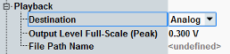
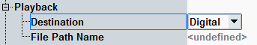
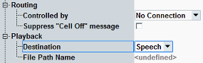

The displayed playback settings depend on the selected "Destination".



All these settings are described in the following.
Selects a destination for the generated audio signal.
"Analog" | The signal is routed to the AF OUT connectors. A mono signal is duplicated and routed to both connectors. For a stereo signal, the left channel is routed to AF 1 OUT, the right channel to AF 2 OUT. |
"Digital" | The signal is routed to the SPDIF OUT connector. Both channels of the connector are used. A mono signal is duplicated. |
"Speech" | The signal is routed to an internal speech encoder. The controlling application can modulate an RF signal with the audio signal and provide the modulated RF signal at an RF output connector. |
Displays the path and file name of a loaded waveform file.
Select and load a file from the main view, see "Open File hotkey".
Remote command:This setting configures the D/A conversion in the signal output path for the "Analog" destination.
The value defines the peak voltage of the analog output signal that corresponds to the digital signal full-scale value.
Configure this setting according to the maximum voltage that you want to generate.
Remote command:Selects the controlling master application for the "Speech" destination.
Remote command:Only relevant for the "Speech" destination.
If the "... Signaling" softkey is selected and the cell signal is on and you press [ON | OFF], a warning can be displayed, asking whether you really want to switch off the cell signal.
The checkbox suppresses the warning.
Remote command:Not applicable